릴리랑 디자인 지도
2026-10-29 기준. 지금 서비스에 들어간 화면, 정해진 규칙, 고민 중인 것, 지난 시안이 어디 있는지를 한 장에. 미리보기 http://localhost:4462/ (배포 전)
지금 서비스 화면
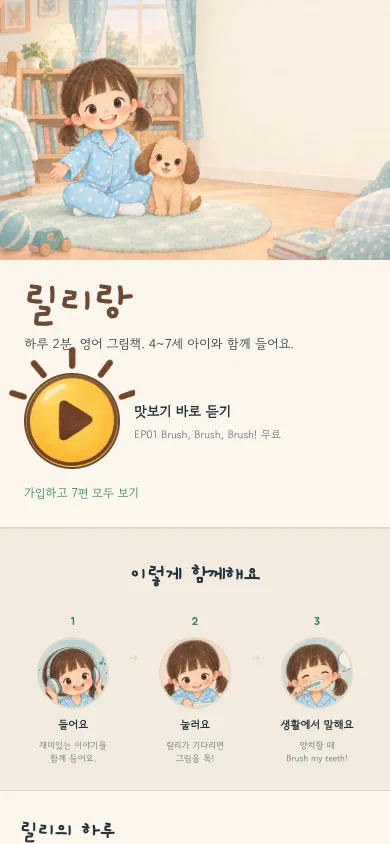
홈 /v3(H01) + 제목만 개구
구현됨
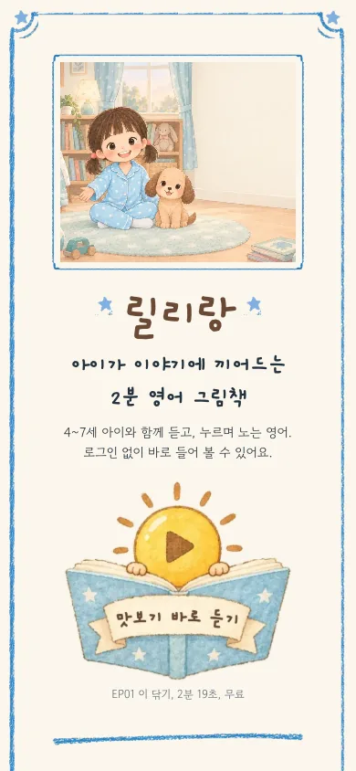
랜딩 /hello/ 휴대폰크레용 겹줄 액자(L17), 리본 글씨 그림에 구움
구현됨
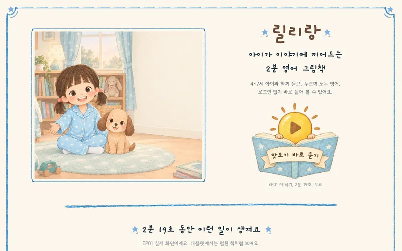
랜딩 /hello/ PCL19
구현됨
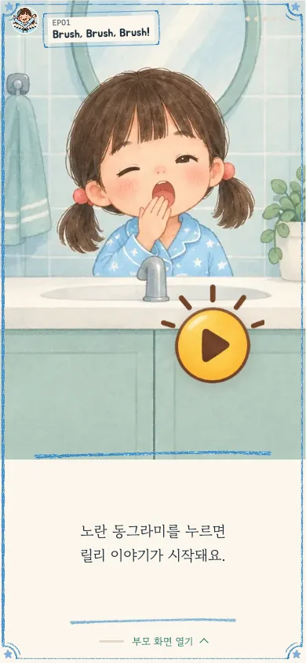
이야기 첫 화면개선안 2(R51) + 크레용(R72)
구현됨
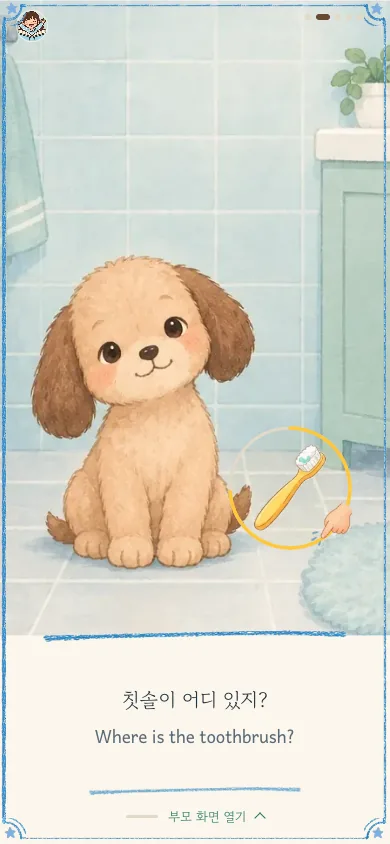
이야기 기다림R52 + R73, 효과음 10종
구현됨
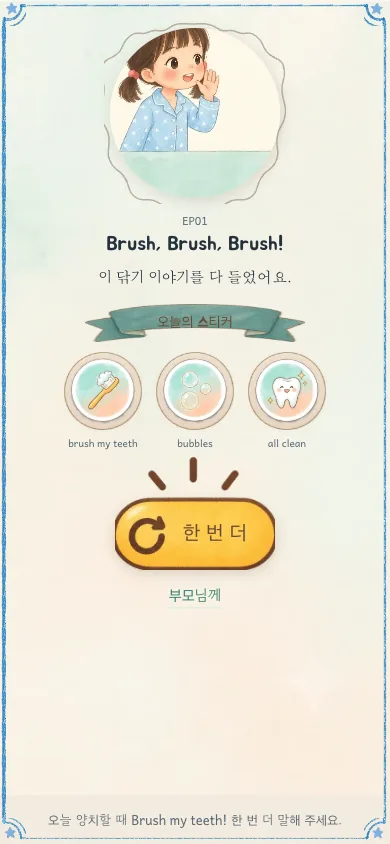
끝 카드R54 + R74
구현됨
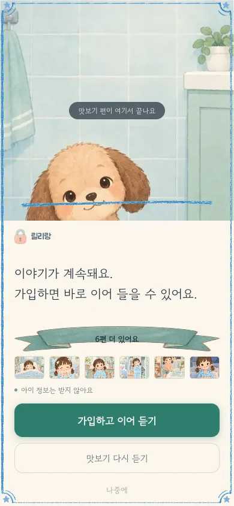
잠금 카드R59 + R75
구현됨
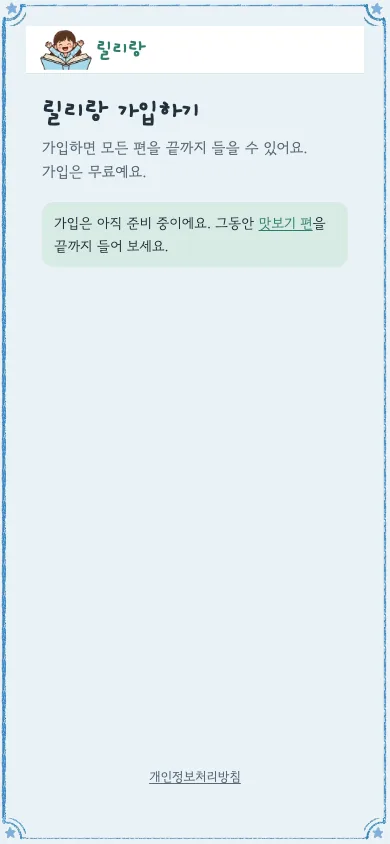
가입 /join/R43 + R76
구현됨
정해진 것 (결정 기록)
- 노랑은 아이가 누르는 것에만(P2). 디자인 원칙은 docs/DESIGN.md, 시스템 보드 S01, S02
- 맛보기 단추는 책 위로 뜨는 해(L13 6번)
- 크레용 겹줄 액자는 랜딩과 이야기, 잠금, 가입에만. 홈은 v3로 되돌림(R71 반려)
- 제목과 큰 글씨만 개구 굵게, 나머지 글꼴은 그대로(L21)
- 이야기 화면 누르는 장치 10종에 작은 효과음(studio/sfx-lab)
- 아이 상호작용 화면은 B 그림체 + D의 노랑 규칙(kids-ep03 B, D 세트)
지금 고민 중
- 홈과 랜딩이 평범하고 밋밋하다. 홈(v3)과 랜딩(크레용)의 얼굴도 다르다
- 원인 진단: 디자인된 로고가 없음, 무료 한글 글꼴의 한계, 그림이 페이지용으로 그려지지 않음(한 장 돌려 씀), 기준 없이 시안만 반복
- 다음 단계 제안: 잘 만든 아동, 가족 브랜드 사이트 참고 판 → 고른 느낌으로 손글씨 로고와 첫 화면용 대표 그림 → 그다음 배치
- 컨셉 B(릴리의 방)처럼 휴대폰 풀커버는 좋다는 의견(C02)
기준과 참고
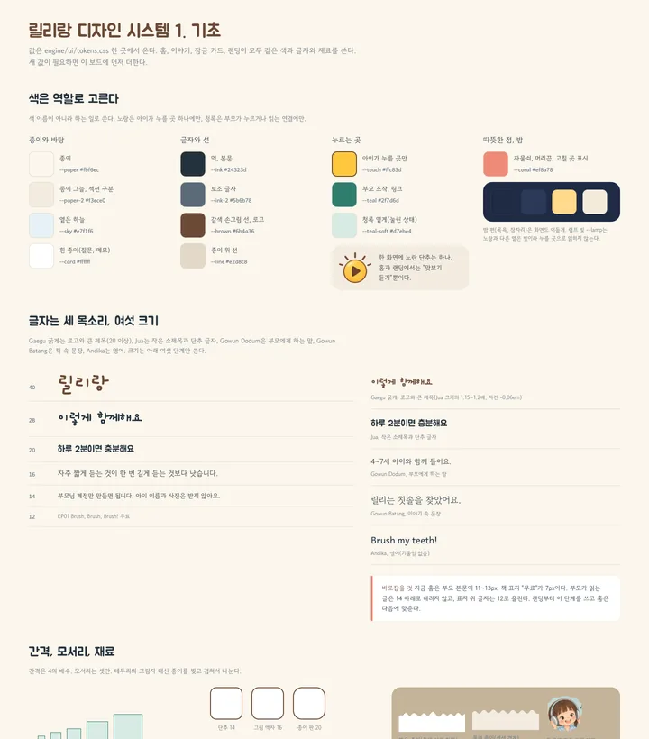
S01 기초색, 글꼴, 간격 (system)
승인
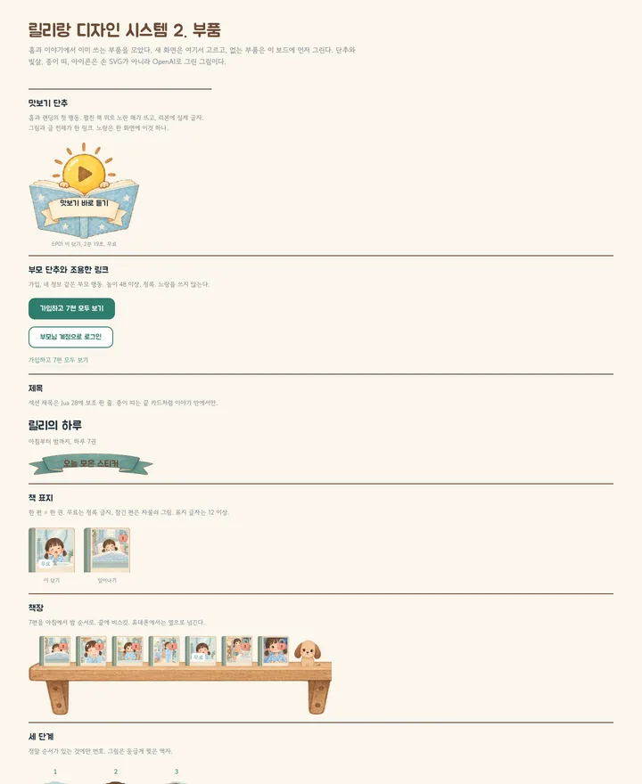
S02 부품단추, 카드, 표시 (system)
승인
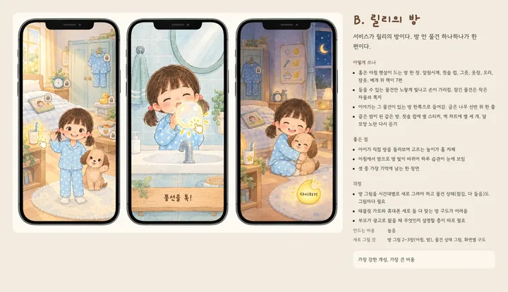
C02 릴리의 방풀커버 참고 (concept)
참고
지난 시안은 어디에
| landing | "지난 시안" 12장: 첫 랜딩 L1~L3, 선 레이아웃 시안, 크레용 변형, 이전 광고 랜딩 L11, L12 |
| redesign | "지난 시안" 27장: 처음 화면 기록 R01~R13, 개선안 1, 크레용 홈 R71. 이야기 화면 바탕은 "이야기 화면 바탕(개선안 2)" 20장 |
| concept | 새 컨셉 C01~C03(참고), 홈과 랜딩 세 방향 C11~C19(반려) |
| taste | taste-skill 시안 T01~T03(반려), 검토 문서 system-review.md |
| kids-ep03 | 아이 상호작용 탐색 24장(지난 시안), 채택된 B, D 세트 |